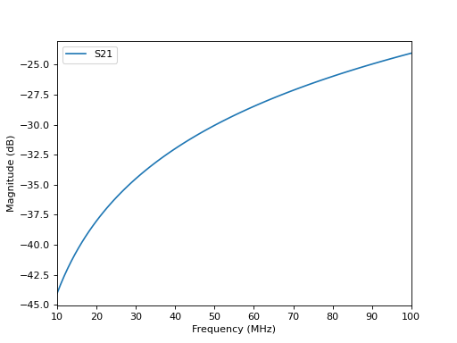

Custom Parametric Models
Sometimes, it is more convenient or elegant to define a custom model that is not available in ParamRF. For example, you may want to:
Define a model using a custom S-parameter equation
Define a reusable component built from sub-models
Expose another model’s parameters under different names/paths
Implement a specialized version of an existing model
In ParamRF, this is done by inheriting directly from Model and overriding at least one of its core methods, namely s(), a(), y(), z(), build(), or primary_matrix().
Defining a Capacitor
Let’s define a capacitor from first principles using its ABCD parameters:
import pmrf as prf
import jax.numpy as jnp
class Capacitor(prf.Model):
C: prf.Param
def a(self, freq: prf.Frequency) -> jnp.ndarray:
w, C = freq.w, self.C
ones, zeros = jnp.ones_like(w), jnp.zeros_like(w)
return jnp.array([
[ones, 1.0 / (1j * w * C)],
[zeros, ones]
]).transpose(2, 0, 1)
By inheriting from Model, Capacitor becomes a Python dataclass and a JAX PyTree! For those familiar with dataclasses, this means that any standard dataclass syntax applies. However, note that Param is simply a type-hint, and does not enforce that the caller actually passes a valid parameter. To guarantee that C becomes a parameter for optimization even if the caller passes a float, we can use a field specifier.
Adding a Field Specifier
ParamRF provides two field specifiers: field and param. For parameters, param allows the following:
Callers can initialize the parameter with a simple float or array-like number
Constraints can be specified that are inherent to the model and will always be enforced
Metadata and scaling can be attached, allowing the model’s units to be changed
The code below demonstrates this by extending the previous class, while constraining C to be only positive and defining the capacitance in terms of picofarads (pF) instead of farads (F):
# <previous imports>
from pmrf.constraints import Positive
class Capacitor(Capacitor):
C: prf.Param = prf.param(constraint=Positive(), scale=1e-12)
# def a(self, freq: prf.Frequency) -> jnp.ndarray:
# <same as before>
The constraints will always be enforced (even for unconstrained optimizers!), and ParamRF will also automatically intersect them with any new constraints provided by the caller.
Evaluating the S-parameters
We can now create a capacitor and plot its S-parameters:
cap = Capacitor(1.0)
cap.plot_s_db(prf.Frequency(10, 100, 101, 'MHz'), m=1, n=0)

ParamRF will automatically perform the conversion between ABCD and S-parameters internally.